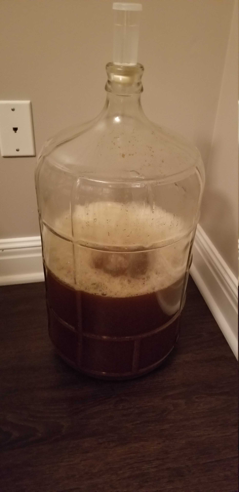
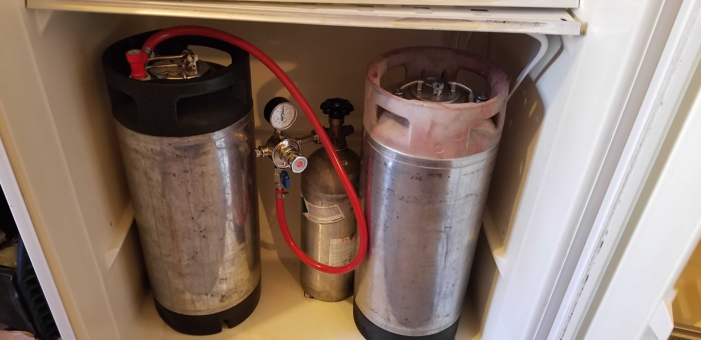
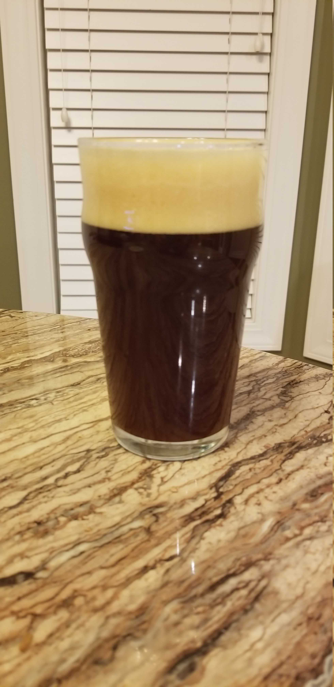

Recreating a recipe from last year for an annual tradition with a few friends. This time around the recipe will be largely the same, but with a few water tweaks. Previously this was made with reverse osmosis water without any additions. This year will use local water since it emphasizes the malts with a few small additions.
The yeast is also being changed to a rehydrated SafAle S-04, mostly because I’ve heard a lot of good things about it.
General Information
| Batch Size | 3 Gal |
| Batch Type | All Grain |
| Expected OG | 94 |
| Actual OG | 88 |
| Expected FG | 25 |
| Actual OG | 34 |
| ABV | 7% |
Schedule
| Segment | Time |
|---|---|
| Mash | 1 Hour |
| Boil | 1 Hour |
Ingredients
Per gallon
| Amount | Ingredient |
|---|---|
| 2 lb | Ashburne Mild Malt or Vienna Malt |
| 1 ⅔ lb | Pale Ale Malt |
| ⅓ lb | Caramel Malt 80°L |
| ⅓ lb | Briess Special Malt |
| ⅑ lb | Molasses |
| Hops | |
| ⅓ oz | Challenger 8.0% AA |
| ⅓ oz | Kent Goldings 5.0% AA |
| Yeast | |
| 1 Packet | SafAle S-04 |
| Other | |
| Steeped After Flame Out: | |
| 0.383 oz | dried orange peel |
| ⅔ stick | cinnamon |
| ½ tab | Whirlflocc |
| Dry Additions | |
| 2 Sticks | Cinnamon |
Mash
| Type | Single Infusion |
| Sparge | Batch |
| Water/Grist | 1.25 qt/lb |
| Target pH | 5.39 |
| Target Mash Temp | 154°F |
| Grain Temp | 68°F |
| Strike Water Temp | 166°F |
| Actual Mash Temp | 154°F |
Strike Water Profile
| Ca+2 | Mg+2 | Na+ | Cl- | SO4-2 | Alkalinity | Residual Alkalinity |
|---|---|---|---|---|---|---|
| 117.1 | 2.7 | 46.0 | 174.7 | 201.6 | 2.5 | -82.5 |
The strike water used for this infusion is the local water with some added calcium carbonate and gypsum. Previously I used untreated RO water for this recipe, this time around I’m trying to specifically target some baked good flavors, and the local water lends itself to those characteristics.
Boil
This is another pretty typical boil - one hour boil with a 15 minute addition of spices at flameout.
Boil Schedule
| Boil Time | Amount | Type |
|---|---|---|
| 60 Min | ⅓ oz (All) | Challenger |
| 10 Min | ⅓ oz (All) | Kent Goldings |
| 5 min | ½ tab | Whirlflocc |
| 0 min | All | Spices |
Fermentation
This was fermented at between 63-67°F. The yeast was rehydrated in 4oz of water for 30 minutes and pitched in the wort at ~74°F to encourage a vigarous start.
 
Turns out that my dining room is just a little too warm for my target fermentation temperature. Instead I’m using my garage with a ferm wrap and a blanket to hit my desired temperature. On the left in the sheet is the McAbod Crane.
Kegging & Carbonation
When racking to the keg I added two cinnamon sticks sanitized in Fire and Cane Glenfiddich. Carbonation was started in the garage between 40° - 50+°F at 45 PSI, alternating with the McAbod Crane so PSI fluctuated considerably. Temperature control was increased after 2 days by moving the keg to a temperature managed freezer. This is now being carbed between 38° - 48°F at 10 PSI until serving time (about 1 week). The C02 tank is still being alternated between this and the McAbod in the mean time.

Result

Appearance
Hazy, redbrown. Creamy and airy brown head that lingers.
Aroma
Primarily cinnamon. Overall a very subdued and mild aroma. There is a mild malt sweetness but it is subtle enough that no obvious notes jump out.
Flavor
Brown sugar, cinnamon, molasses cookies.
Mouthfeel
Heavy and creamy.
Things to do Better
This time around my OG and attenuation were both lower than I would have liked I believe that the OG was caused by a last minute decision to mash at 154°F, which was probably waaay higher than it should have been. The attenuation issues may have been caused by not using a yeast starter. This brew was only 3 gallons, but the high gravity was seemingly too much for the single rehydrated packet.
Flavor wise this winter warmer is more approachable than last year, probably from a combination of the lower ABV and smaller spice additions. I do miss the nutmeg from last year, even if it was overwhelming. A hint would be a welcome addition, and may be added to some glasses to try out.